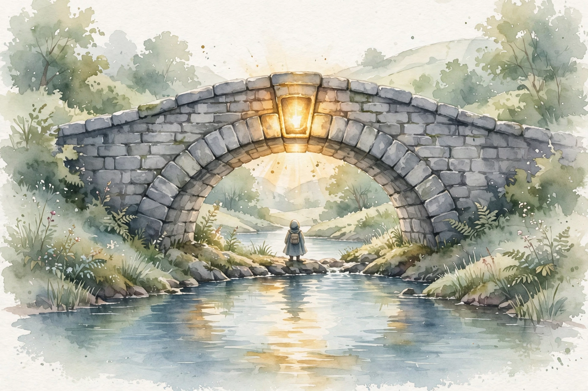

You Are Not So Smart · Episode 033 · Interactive Companion
Belief
Will Storr spent intimate time with creationists, deniers, and past life believers, and came back with a structural finding. They are not stupid. Facts fail for a reason, and the same reason holds your own beliefs up.
← Track index · Episode chapter →

Illustration. Watercolor-style image generated for this page. A glowing keystone holds a stone arch. Not a photograph.
The Wisdom Index: every nugget in this companion
Part 1
The Man the Facts Could Not Touch
SOURCEStorr opens with John Mackay, an Australian creationist with influence across Australia, the UK, and the US. Storr met him at a town hall in remote northern Australia, selling religious items and double DVD packs of his debates with scientists. A man who debates scientists and sells the recordings behaves like somebody who wins.
SOURCEMackay was not stupid. He was not mad. He lived an orderly, successful life. He believed the earth is 6,000 years old and the devil literally exists. Storr interviewed him with basic scientific facts and simple logic questions. If Eden was perfect, with no carnivores and no disease, why does the T-Rex have huge teeth? Answer: “So they can eat watermelons.”
SOURCEThe facts landed nowhere. Mackay was impervious. And the cheap explanation died on contact with the man himself. He was intelligent and sane, which makes the question interesting, because then the same question applies to you: how do you know that you are right and they are wrong?
INTERPRETATIONThe pivot Storr demands: stop asking what is wrong with them. Ask why facts do not work on people. The moment you grant their intelligence, the inquiry turns on your own beliefs, which is exactly where it belongs.
Part 2
The Sacred-Emotion Detector
If you want to find irrationality, then look for the things that people make sacred.
Jonathan Haidt, as quoted by Storr in the interview
SOURCEStorr credits the psychologist Jonathan Haidt with the rule: irrationality lives where emotion lives. Sacred means the things that make a person emotional. Haidt accepts climate change, yet does not trust the left to tell him the truth about it, because they made it sacred and uncriticizable. He does not trust the right on the free market, sacred to their sense of self.
SOURCEStorr applies the detector to himself. Thinking about the Gaza Strip makes him so emotional he wants to shout and cry. His policy: stay silent about it in public, because a spiked needle means the brain cannot report the truth. The emotion is the instrument reading. When the needle spikes, the brain is in no state to report the truth.
SOURCEMcRaney reports the same practice independently. He writes out the angry reply, reads it, deletes it, and moves on. Both men converged on the same tell: the urge to broadcast your view to the world is itself the warning signal. Feeling strongly enough to tell everyone is the moment to step back.
INTERPRETATIONThe detector, as a weekly practice: list five topics, rate your heat from 1 to 10, and for anything at 7 or above, write the policy next to it. I do not trust my brain on this. No public statements. Check the heat before you check the facts.
Nugget
The sacred-emotion detector
What happened. SOURCEHaidt's rule locates irrationality at the sacred: where emotion spikes, the brain cannot be trusted.
Why it matters. INTERPRETATIONThe heat is the instrument reading. Loud certainty is data about you, not about the topic.
The principle. INTERPRETATIONAbove 7 on the heat scale, disqualify yourself as judge. Delete the draft. Return later.
Part 3
The Hero Maker
SOURCEStorr's central model: the brain is a hero maker. It casts you as the plucky hero struggling against great odds, then casts villains and allies around you. Who gets cast in which role bends what you believe, to an extraordinary degree. A skeptic in the skeptic tribe hears something negative about a rival and accepts it without the scrutiny they would apply to their own side. The story comes first. The evidence gets hired to play a part.
SOURCEYou do not choose your sacred beliefs. Storr grew up an atheist among Catholics and felt superior for it. Later he saw the flaw: he could not suddenly decide to believe in God, any more than he chose his eye color. Belief arrived unchosen. And the unchosen belief had costs he could name: believers get an invisible best friend, forgiveness on demand, and paradise ahead.
SOURCEMcRaney asks whether religion differs in kind from alien abductions or past lives. Storr: only in depth, not in kind. God sits at the root of a person's cause and effect network and sense of self. A UFO sighting is a shallow irrationality by comparison. Both are story mode beliefs. One is load bearing for the whole structure.
SOURCEOn why beliefs cluster left and right, Storr starts in genetics: researchers estimate around 1,000 genes influence whether people turn out left or right, much of it through fearfulness. A fearful brain dislikes novelty and loves structure, order, hierarchy, and tradition. Then life self reinforces the drift: the community, the papers, the schools, each confirming the setting. One trait in, a whole politics out.
One trait fans out to a politics
Hover any bar for detail. The episode's account, simplified to the causal chain.
Source: Storr interview, ep033, via the track chapter. Original toy chart built from episode claims.
SOURCEThe same machinery explains selective skepticism: the person who doubts a birth certificate and vaccines but not Noah's Ark. Skepticism is not applied evenly. It deploys where the story needs defense and suspends where the story needs support.
INTERPRETATIONThe targeting is the tell. List three things you doubt and three you accept. If the doubts all flatter your hero narrative and the acceptances all flatter it too, the skepticism is selective. Aim it at your own sacred beliefs first.
Nugget
The hero maker
What happened. SOURCEThe brain casts you as David against Goliath daily, then hires evidence to play the parts.
Why it matters. INTERPRETATIONBeliefs that nourish the narrative are load bearing. Facts that threaten them threaten the self.
The principle. INTERPRETATIONWrite your own David and Goliath story in three sentences. The beliefs it needs are your keystones.
Part 4
Lord Monckton: The Full Story
SOURCEStorr's longest case study is Lord Christopher Monckton, a British aristocrat and prominent climate skeptic. Storr realized debating graphs was pointless. What mattered was the story Monckton's brain told him. So he asked for the life story.
SOURCEBorn to extreme wealth, schooled at Harrow when the empire still stood, raised on the promise that Harrow men would ride and rule. Then the war destroyed Britain's finances, the country begged America for loans, and much of the money went to the welfare state. In Monckton's story, the left lost the fabulous empire, the communists schemed to wreck capitalism, and the UN still fights from the KGB playbook with a secret plan to take over the world. And Monckton himself is the plucky David, flying the flag for truth against Goliath.
SOURCEStorr's conclusion: no paper, no graph, no segment can move this belief, because the belief is not about climate. It is the keystone of Monckton's identity. If it changed, the entire sense of self would fall to pieces. In the face of that vivid story he lives inside, a scientific paper is noise.
Beliefs are keystones, not bricks
Hover any layer for detail. Facts attack the top layer. The arch stands on the lower ones.
Source: Storr interview, ep033, via the track chapter. Original toy chart built from episode claims.
SOURCEStorr draws the universal claim: “We are all Lord Monckton to a certain extent.” Everyone holds passionate beliefs because they nourish the sense of being a good person in a noble fight. Those are the beliefs to suspect first.
INTERPRETATIONThe Monckton test for the reader: can you tell a person's life story from their belief? If yes, facts will not work on it. Ask instead what would fall if the belief were false. If the answer includes identity, tribe, or life story, it is load bearing.
Nugget
The Monckton keystone
What happened. SOURCEOne life story fully explains one immovable belief. The belief is the keystone of the identity arch.
Why it matters. INTERPRETATIONFacts attack the belief. Removing the belief collapses the arch. The brain defends the arch.
The principle. INTERPRETATIONDiagnose keystone versus ignorance before you prescribe. Facts fill ignorance. Only a new story replaces a keystone.
Part 5
The Balance: Science and Eccentricity
SOURCEStorr calls science our greatest achievement, a tool we invented to save us from ourselves. Yet his book celebrates eccentricity as the richness of the species. He balances the two with law at the harm boundary. Where irrational belief harms others, hate speech, or a sick child given homeopathy instead of medicine, the law intervenes, and he would strengthen it. Where it harms no one, eccentricity stays celebrated.
SOURCEHis Dadaab story sets the stakes. In 2007 he spent a week in the world's largest refugee camp, on the Kenya-Somalia border, among strictly orthodox Muslims. Strict thought systems, he concluded, try to turn everybody into the same person. He sees the same conformist impulse in the most militant rationalists. A wand that made everyone rational would delete the color.
SOURCEOn social media, Storr argues the platform is custom designed to manufacture rows. Every exchange is public, visible to the people you admire most, and the short format strips the good manners padding that softens disagreement. McRaney's counter practice is his Bushido code: only talk about things you love, never attack what you hate. Once he engages, he ruminates for days and no facts work on either side. The code is a commitment device against his own hero maker.
INTERPRETATIONThe engineer's version of the balance: in code review, attack the design's harm surface with full rigor, correctness, safety, cost, and leave the harmless eccentricities alone. Rigor at the boundary, tolerance inside it.
Nugget
The harm boundary
What happened. SOURCEStorr draws the line at harm: law where beliefs hurt others, celebration where they hurt no one.
Why it matters. INTERPRETATIONNot every false belief needs a fight. Save rigor for the boundary that matters.
The principle. INTERPRETATIONFull science at the harm surface. Live and let live everywhere else.